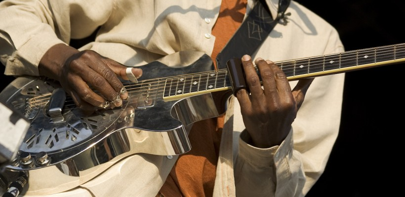

Slide guitar is a particular method or technique for playing the guitar. Instead of altering the pitch of the strings by pressing the string against frets, an slide is placed on the players finger and this alternates the pitch of the guitar. This slide can be rubbed along the string without having to lift your finger off (hence the name), creating smooth transitions in pitch and allowing wide, expressive vibrato.
An example of a slide being used on a slide guitar.
The slide is pressed up against the strings gently, so it doesnt touch the fretboard, and is parallel to the frets. The pitch of the strings is then changed by running the slide up and down the fretboard. The twelve pitches per octave limitation no longer applies when using a slide. The technique lends itself to glissandi, it can also produce natural noises. It